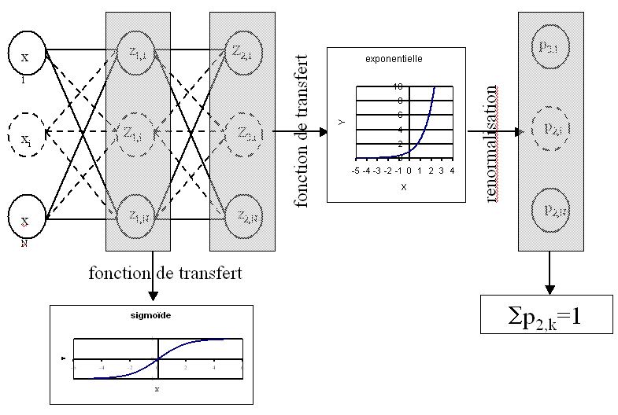

Classification#
Vraisemblance d’un échantillon de variable suivant une loi multinomiale#
Soit \(\pa{Y_i}_{1 \infegal i \infegal N}\) un échantillon de variables aléatoires i.i.d. suivant la loi multinomiale \(\loimultinomiale { \vecteurno{p_1}{p_C}}\). On définit \(\forall k \in \intervalle{1}{C}, \; d_k = \frac{1}{N} \sum_{i=1}^{N} \indicatrice{Y_i = k}\). La vraisemblance de l’échantillon est :
Cette fonction est aussi appelée distance de Kullback-Leiber ([Kullback1951]), elle mesure la distance entre deux distributions de variables aléatoires discrètes. L”estimateur de maximum de vraisemblance (emv) est la solution du problème suivant :
Problème P1 : estimateur du maximum de vraisemblance
Soit un vecteur \(\vecteur{d_1}{d_N}\) tel que :
On cherche le vecteur \(\vecteur{p_1^*}{p_N^*}\) vérifiant :
Théorème T1 : résolution du problème du maximum de vraisemblance
La solution du problème du maximum de vraisemblance est le vecteur :
Démonstration
Soit un vecteur \(\vecteur{p_1}{p_N}\) vérifiant les conditions :
La fonction \(x \longrightarrow \ln x\) est concave, d’où :
La distance de KullBack-Leiber compare deux distributions de probabilités entre elles. C’est elle qui va faire le lien entre le problème de classification discret et les réseaux de neurones pour lesquels il faut impérativement une fonction d’erreur dérivable.
Problème de classification pour les réseaux de neurones#
Le problème de classification est un cas particulier de celui qui suit pour lequel il n’est pas nécessaire de connaître la classe d’appartenance de chaque exemple mais seulement les probabilités d’appartenance de cet exemple à chacune des classes.
Soient une variable aléatoire continue \(X \in \mathbb{R}^p\) et une variable aléatoire discrète multinomiale \(Y \in \intervalle{1}{C}\), on veut estimer la loi de :
Le vecteur \(\vecteur{p_1\pa{W,X}}{p_C\pa{W,X}}\) est une fonction \(f\) de \(\pa{W,X}\) où \(W\) est l’ensemble des \(M\) paramètres du modèle. Cette fonction possède \(p\) entrées et \(C\) sorties. Comme pour le problème de la régression, on cherche les poids \(W\) qui correspondent le mieux à l’échantillon :
On suppose que les variables \(\pa{Y_i|X_i}_{1 \infegal i \infegal N}\) suivent les lois respectives \(\pa{\loimultinomiale{y_i}}_{1 \infegal i \infegal N}\) et sont indépendantes entre elles, la vraisemblance du modèle vérifie d’après l’équation (1) :
La solution du problème \(\overset{*}{W} = \underset{W \in \mathbb{R}^l}{\arg \max} \; L_W\) est celle d’un problème d’optimisation sous contrainte. Afin de contourner ce problème, on définit la fonction \(f\) :
Les contraintes sur \(\pa{p^k\pa{W,X_i}}\) sont bien vérifiées :
On en déduit que :
D’où :
Ceci mène à la définition du problème de classification suivant :
Problème P2 : classification
Soit \(A\) l’échantillon suivant :
\(y_i^k\) représente la probabilité que l’élément \(X_i\) appartiennent à la classe \(k\) : \(\eta_i^k = \pr{Y_i = k | X_i}\)
Le classifieur cherché est une fonction \(f\) définie par :
Dont le vecteur de poids \(W^*\) est égal à :
Réseau de neurones adéquat#
Dans le problème précédent, la maximisation de \(\overset{*}{W} = \underset{W \in \mathbb{R}^M}{\arg \max} \, L_W\) aboutit au choix d’une fonction :
Le réseau de neurones suivant \(g : \pa{W,X} \in \mathbb{R}^M \times \mathbb{R}^p \longrightarrow \mathbb{R}^C\) choisi pour modéliser \(f\) aura pour sorties :
Figure F1 : Réseau de neurones adéquat pour la classification
On en déduit que la fonction de transert des neurones de la couche de sortie est : \(x \longrightarrow e^x\). La probabilité pour le vecteur \(x\in\mathbb{R}^p\) d’appartenir à la classe \(k\in\intervalle{1}{C}\) est \(p_k(\overset{*}{W},x) = \pr{Y=k|x} = \dfrac { g_k(\overset{*}{W},x)} {\sum_{l=1}^{C} g_l(\overset{*}{W},x) }\). La fonction d’erreur à minimiser est l’opposé de la log-vraisemblance du modèle :
On note \(C_{rn}\) le nombre de couches du réseau de neurones, \(z_{C_{rn}}^k\) est la sortie \(k\) avec \(k \in \intervalle{1}{C}\), \(g_k\pa{W,x} = z_{C_{rn}}^k = e^{y_{C_{rn}}^k}\) où \(y_{C_{rn}}^k\) est le potentiel du neurone \(k\) de la couche de sortie.
On calcule :
Cette équation permet d’adapter l’algorithme de la rétropropagation décrivant rétropropagation pour le problème de la classification et pour un exemple \(\pa {X,y=\pa{\eta^k}_{1 \infegal k \infegal C}}\). Seule la couche de sortie change.
Algorithme A1 : rétropropagation
Cet algorithme de rétropropagation est l’adaptation de rétropropagation pour le problème de la classification. Il suppose que l’algorithme de propagation a été préalablement exécuté. On note \(y'_{c,i} = \partialfrac{e}{y_{c,i}}\), \(w'_{c,i,j} = \partialfrac{e}{w_{c,i,j}}\) et \(b'_{c,i} = \partialfrac{e}{b_{c,i}}\).
Initialiasation
Récurrence, Terminaison
Voir rétropropagation.
On vérifie que le gradient s’annule lorsque le réseau de neurones retourne pour l’exemple \(\pa{X_i,y_i}\) la distribution de \(Y|X_i \sim \loimultinomiale{y_i}\). Cet algorithme de rétropropagation utilise un vecteur désiré de probabilités \(\vecteur{\eta_1}{\eta_{C_C}}\) vérifiant \(\sum_{i=1}^{C_C} \, \eta_i = 1\). L’expérience montre qu’il est préférable d’utiliser un vecteur vérifiant la contrainte :
Généralement, \(\alpha\) est de l’ordre de \(0,1\) ou \(0,01\). Cette contrainte facilite le calcul de la vraisemblance et évite l’obtention de gradients quasi-nuls qui freinent l’apprentissage lorsque les fonctions exponnetielles sont saturées (voir [Bishop1995]).